Per capita: Quebec teens most targeted by fraud in Canada
EDA of the Canadian Anti-Fraud Centre Report Data using Databot
Canadian Anti-Fraud Centre
CAFC
Databot
Posit
Positron
ggplot2
Author
Eileen Murphy
Published
January 11, 2026
Note
Updated 2026-01-11 Updates for CAFC - No updates yet for 2025 Q4.
AI Assisted EDA
Our EDA of the The Canadian Anti-Fraud Centre (CAFC) updated report for the 3rd quarter of 2025 shows that Quebec teens have been targeted more than teens in other Canadian provinces. This EDA shows the exploratory nature and questions that emerged after each iteration. The direction of the databot was directed by not a mysterious black box, but by our questions after each interation. Will there be the same conclusion, if you use the tool. Maybe, maybe not, that’s the beauty of it. It all depends on the questions we ask. This EDA is just one pattern out of many it can detect. EDA’s are time consuming and without such tools, it’s easy to go down the wrong path. If there are time constraints to the project, this phase could be compromised the most because it’s so boring and time-consuming. Databot is a valuable tool to get to the heart of the problem and frame better questions for further analysis. I know from personal experience that I have missed the boat on more than one occasion because I took the wrong turn, saw things that weren’t there, but maybe they weren’t that significant. Spent a lot of time to find a lot of dead ends. This tool by Posit, makes this time consuming task much more efficient. What makes or breaks databot and it’s usefulness are the questions asked after it produces a plot, it’s pair programming at its finest.
Posit who makes this tool, has an excellent blog post and how to use and implement it in your project. It doesn’t come out perfectly, the plots are incomplete or truncated, the texts are filled with fruit icons and such. But it forces us to make sure we comb through it. What is nice is that the code is included so that we can see what data is being used.
CAFC’s report for Q4 has not been updated yet (as of Jan 11, 2026) because of the change over in ownership of the database between CAFC and RCMP according to its website. But, we will update this when it comes through.
What’s encouraging is the inference analysis at the end of this report showing a deep decline (-72.4%) in Quebec teens being victimized by fraud from 2021. Subsequent years, show a steady decline but well above other provinces. The results show that CAFC has been effective through their campaigns and partnerships to effect this change. This would certainly give reason to continue to fund CAFC in the future.
We pre-process the data from the website using our own data pipeline using pyspark. You can check it out here. Scroll to the bottom of the page to download your own copy of the processed data on your local machine.
Sample records of CAFC dataset
Show the code
gt(head(cafc_clean))
id
date
complaint_type
country
province
fraud_cat
sol_method
gender
lang_cor
age_range
complaint_subtype
num_victims
dollar_loss
350308
2025-09-29
Phone
Canada
Ontario
Personal Info
Direct call
Female
English
'30 - 39
Victim
1
0
350309
2025-09-29
Phone
Canada
Quebec
Identity Fraud
Other/unknown
Male
English
'50 - 59
Victim
1
0
350310
2025-09-29
Phone
Canada
Quebec
Extortion
Direct call
Female
French
'20 - 29
Attempt
0
0
350311
2025-09-29
Phone
Canada
Ontario
Identity Fraud
Other/unknown
Female
English
'40 - 49
Victim
1
0
350312
2025-09-29
Phone
Canada
Manitoba
Identity Fraud
Other/unknown
Female
English
'60 - 69
Victim
1
0
350313
2025-09-29
Phone
Canada
Alberta
Investments
Internet
Male
English
'70 - 79
Victim
1
20000
Sample records of CAFC monthly aggregations of victims and dollar loss (cafc_monthly)
Show the code
gt(head(cafc_monthly))
year
month
total_loss
total_victims
2021
1
12894120
4411
2021
2
27042043
5055
2021
3
17017938
6111
2021
4
22120277
4711
2021
5
19401052
4348
2021
6
19796861
4633
Sample records of CAFC yearly aggregations of victims and dollar loss (cafc_yearly)
Show the code
gt(head(cafc_yearly))
year
total_loss
total_victims
2021
309470943
52832
2022
444355315
47551
2023
497239290
35746
2024
524288975
30253
2025
439048068
19264
CAFC Fraud: Annual Total Loss vs Number of Victims
Show the code
options(scipen =999)yearly_plot <-ggplot(cafc_yearly, aes(x=year)) +geom_col(aes(y=total_loss/1000000), fill="steelblue") +geom_line(aes(y=total_victims/1000), color="red", group=1) +geom_point(aes(y=total_victims/1000),color="red", size=3) +scale_y_continuous(name ="Total Loss (Millions CAD)",sec.axis =sec_axis(~. *1000, name ="Total Victims") ) +labs(title ="CAFC Fraud: Annual Total Loss vs Number of Victims",subtitle ="Blue bars: Total Loss (Millions CAD), Red line: Number of Victims",x ="Year" ) +theme_minimal()print(yearly_plot)
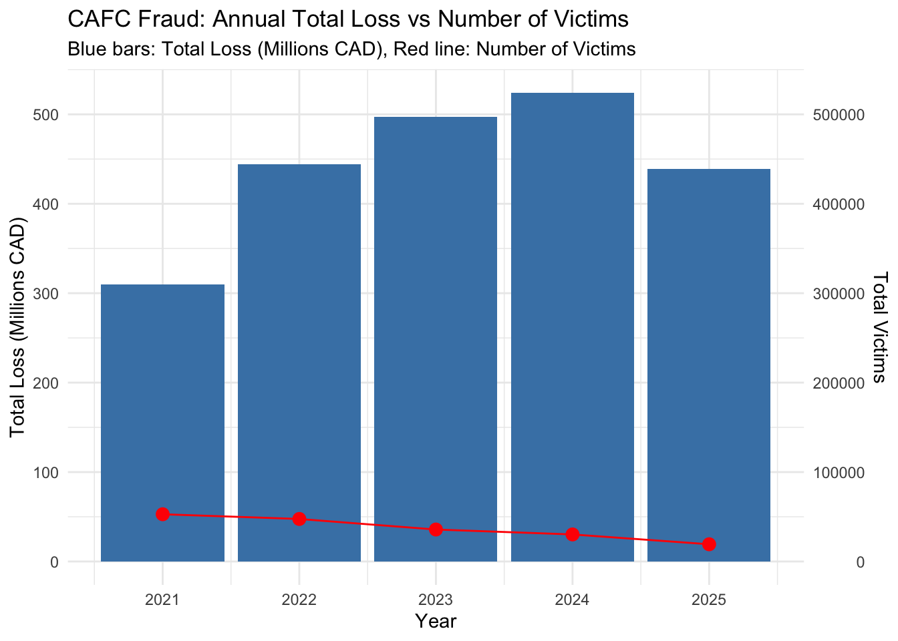
Monthly Fraud Loss Trends
Show the code
# Create visualization 2: Monthly fraud loss trends# Create a date column for better plottingcafc_monthly$date <-as.Date(paste(cafc_monthly$year, cafc_monthly$month, "01", sep ="-"))monthly_plot <-ggplot(cafc_monthly, aes(x = date, y = total_loss/1000000)) +geom_line(color ="navy", linewidth =1) +geom_point(color ="darkred") +labs(title ="Monthly Fraud Loss Trends",subtitle ="CAFC Data: January 2021 - Present",x ="Month",y ="Total Loss (Millions CAD)" ) +theme_minimal() +theme(plot.title =element_text(size =14, face ="bold"),axis.text.x =element_text(angle =45, hjust =1) ) +scale_x_date(date_labels ="%Y-%m", date_breaks ="6 months")print(monthly_plot)
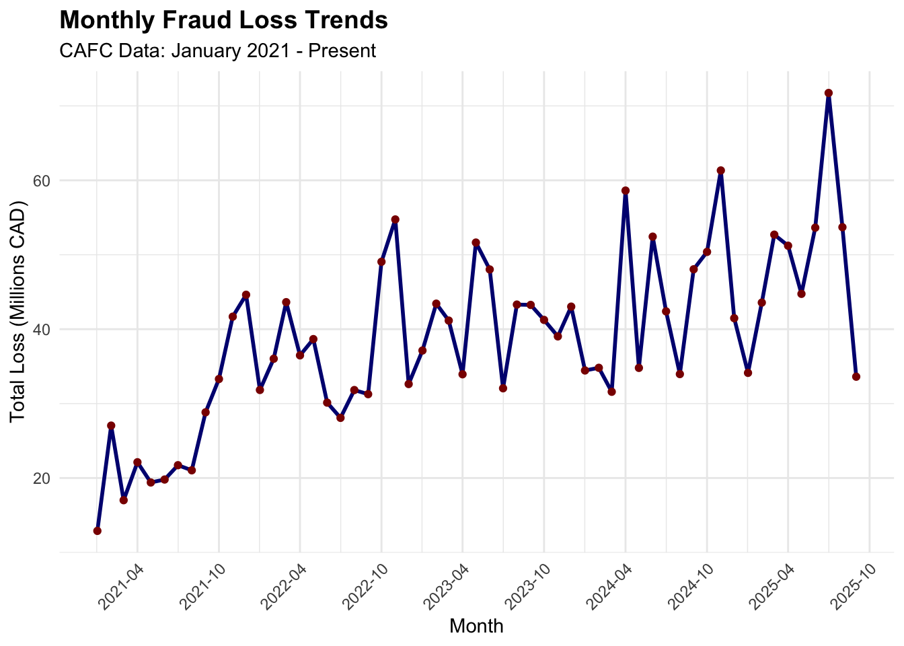
Top 10 Fraud Categories
Show the code
# Create visualization 3: Fraud categories from detailed dataset# Get top fraud categoriesfraud_summary <-table(cafc_clean$fraud_cat)fraud_df <-data.frame(fraud_type =names(fraud_summary),count =as.numeric(fraud_summary)) # Sort and take top 10fraud_df <- fraud_df[order(fraud_df$count, decreasing =TRUE), ]top_fraud <- fraud_df[1:10, ]# Create the plotfraud_plot <-ggplot(top_fraud, aes(x =reorder(fraud_type, count), y = count)) +geom_col(fill ="coral", alpha =0.8) +coord_flip() +labs(title ="Top 10 Fraud Categories",subtitle ="Based on number of reported complaints",x ="Fraud Category",y ="Number of Reports" ) +theme_minimal() +theme(plot.title =element_text(size =8, face ="bold"),axis.text.y =element_text(size =10) ) +geom_text(aes(label = scales::comma(count)), hjust =-0.1, size =2)print(fraud_plot)
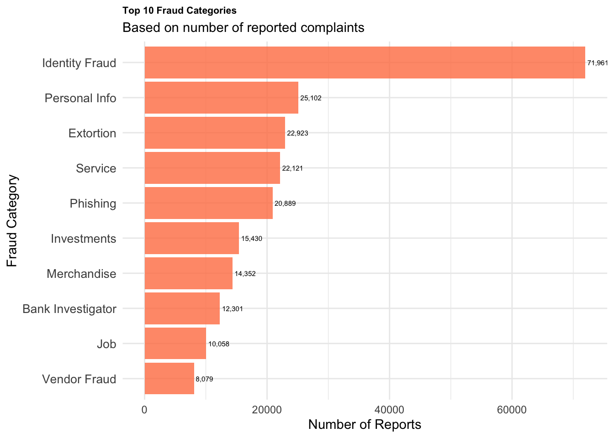
Fraud Reports by Province/Territory
Show the code
# Create visualization 4: Fraud by Provinceprovince_summary <-table(cafc_clean$province)province_df <-data.frame(province =names(province_summary),count =as.numeric(province_summary))# Sort and filter out very small counts for readabilityprovince_df <- province_df[order(province_df$count, decreasing =TRUE), ]province_df <- province_df[province_df$count >1000, ] # Only provinces with >1000 casesprovince_plot <-ggplot(province_df, aes(x =reorder(province, count), y = count)) +geom_col(fill ="darkgreen", alpha =0.7) +coord_flip(clip="off") +labs(title ="Fraud Reports by Province/Territory",subtitle ="Provinces with >1,000 reported cases",x ="Province/Territory",y ="Number of Reports" ) +theme_minimal() +theme(plot.title =element_text(size =9, face ="bold"),axis.text.y =element_text(size =9, hjust=1)#plot.margin= margin(t = 10, r = 50, b = 10, l = 10) ) +geom_text(aes(label = scales::comma(count)), hjust =-0.1, size =1.8)print(province_plot)
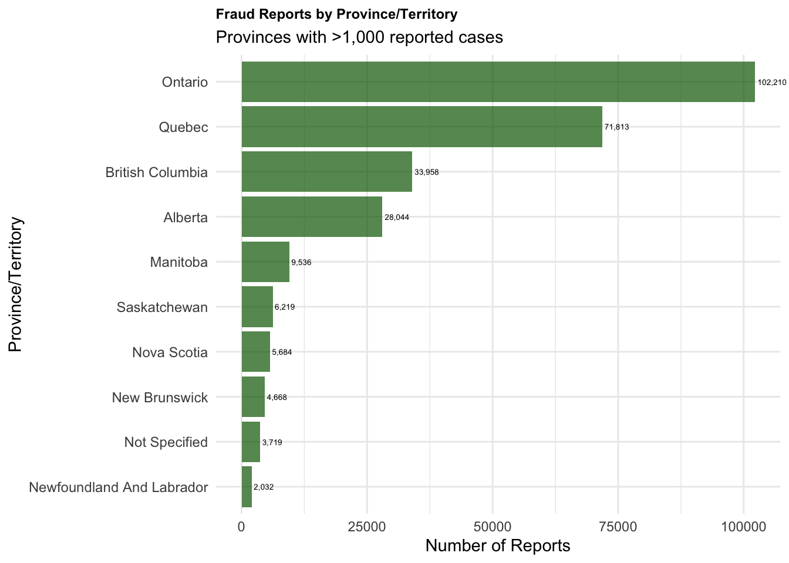
Fraud Reports by Age Group
Show the code
# Create visualization 5: Fraud by Age Groupsage_summary <-table(cafc_clean$age_range)age_df <-data.frame(age_group =names(age_summary),count =as.numeric(age_summary))# Clean up age group names and filter meaningful groupsage_df <- age_df[age_df$count >500, ] # Filter small groupsage_df <- age_df[!grepl("Not Available|non disponible", age_df$age_group), ] # Remove NA groupsage_plot <-ggplot(age_df, aes(x =reorder(age_group, count), y = count)) +geom_col(fill ="purple", alpha =0.7) +coord_flip(clip="off") +labs(title ="Fraud Reports by Age Group",subtitle ="Age groups with >500 reported cases",x ="Age Range",y ="Number of Reports" ) +theme_minimal() +theme(plot.title =element_text(size =14, face ="bold"),axis.text.y =element_text(size =10) ) +geom_text(aes(label = scales::comma(count)), hjust =-0.1, size =2)print(age_plot)
Fraud Victims by Gender
Show the code
# Create visualization 6: Gender distribution of fraud victimsgender_summary <-table(cafc_clean$gender)gender_df <-data.frame(gender =names(gender_summary),count =as.numeric(gender_summary))# Filter out "Not Available" and very small countsgender_df <- gender_df[!grepl("Not Available", gender_df$gender), ]gender_df <- gender_df[gender_df$count >1000, ]
Gender Distribution
Show the code
gender_plot <-ggplot(gender_df, aes(x = gender, y = count, fill = gender)) +geom_bar(stat ="identity") +labs(title ="Fraud Victims by Gender",subtitle ="Distribution of reported fraud cases",fill ="Gender" ) +theme_minimal() +theme(plot.title =element_text(size =14, face ="bold"),legend.position ="none" ) +scale_fill_manual(values =c("Female"="pink", "Male"="lightblue", "Other"="lightgray")) +geom_text(aes(label = scales::comma(count)), vjust =-0.4, size =3.5)print(gender_plot)
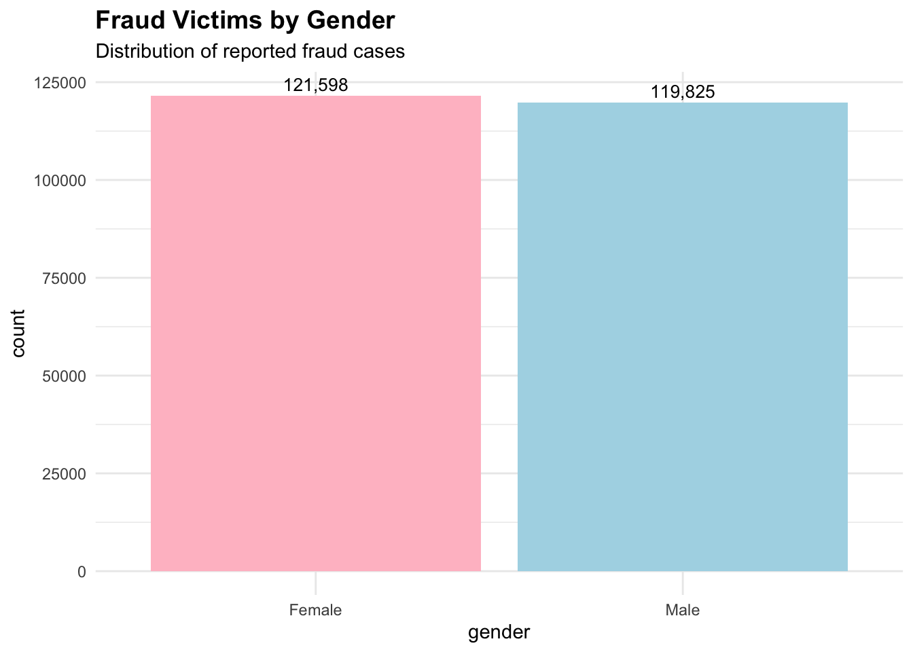
Average Financial Loss by Fraud Method
Show the code
# Create visualization 7: Average fraud loss by solicitation method# First, let's examine the solicitation methods and calculate average lossesmethod_loss <-aggregate(dollar_loss ~ sol_method, data = cafc_clean, FUN =function(x) c(mean =mean(x, na.rm =TRUE), count =length(x[!is.na(x)])))# Convert to proper data framemethod_df <-data.frame(method = method_loss$sol_method,avg_loss = method_loss$dollar_loss[,"mean"],count = method_loss$dollar_loss[,"count"])# Filter methods with reasonable sample sizes and remove extreme outliersmethod_df <- method_df[method_df$count >=100& method_df$avg_loss <50000, ]method_df <- method_df[order(method_df$avg_loss, decreasing =TRUE), ]method_plot <-ggplot(method_df, aes(x =reorder(method, avg_loss), y = avg_loss)) +geom_col(aes(fill = count), alpha =0.8) +coord_flip(clip="off") +labs(title ="Average Financial Loss by Fraud Method",subtitle ="Methods with ≥100 cases, excluding extreme outliers",x ="Solicitation Method",y ="Average Loss (CAD)",fill ="Number of Cases" ) +theme_minimal() +theme(plot.title =element_text(size =14, face ="bold"),axis.text.y =element_text(size =9) ) +scale_fill_gradient(low ="lightblue", high ="darkblue") +scale_y_continuous(labels = scales::dollar_format(prefix ="$")) +geom_text(aes(label = scales::dollar(round(avg_loss))), hjust =-0.1, size =2.8)print(method_plot)
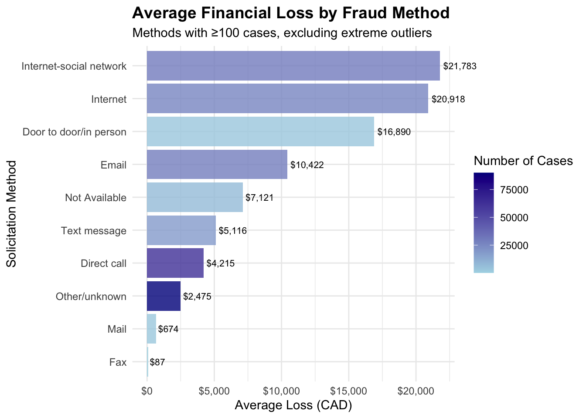
Fraud Province Table
Show the code
# Create a cross-tabulation of fraud types by provincefraud_province_table <-table(cafc_clean$province, cafc_clean$fraud_cat)# Convert to data frame for ggplotfraud_province_df <-as.data.frame(fraud_province_table)names(fraud_province_df) <-c("Province", "Fraud_Type", "Count")# Filter to focus on major provinces and fraud types (to make heatmap readable)# Get top 8 provinces by total fraud casestop_provinces <-names(sort(rowSums(fraud_province_table), decreasing =TRUE))[1:8]# Get top 10 fraud types by total casestop_fraud_types <-names(sort(colSums(fraud_province_table), decreasing =TRUE))[1:10]# Filter the datafraud_province_filtered <- fraud_province_df[ fraud_province_df$Province %in% top_provinces & fraud_province_df$Fraud_Type %in% top_fraud_types, ]# Check the structurecat("Filtered data dimensions:", nrow(fraud_province_filtered), "rows\n")
Top fraud types: Identity Fraud, Personal Info, Extortion, Service, Phishing ...
Fraud Type Specialization by Province
Show the code
# Create the heatmapheatmap_plot <-ggplot(fraud_province_filtered, aes(x = Fraud_Type, y = Province, fill = Count)) +geom_tile(color ="white", linewidth =0.5) +scale_fill_gradient(low ="white", high ="darkred", name ="Number\nof Cases") +labs(title ="Fraud Type Specialization by Province",subtitle ="Heatmap showing concentration of different fraud types across Canadian provinces",x ="Fraud Type",y ="Province" ) +theme_minimal() +theme(plot.title =element_text(size =14, face ="bold"),axis.text.x =element_text(angle =45, hjust =1, size =9),axis.text.y =element_text(size =10),panel.grid =element_blank() ) +geom_text(aes(label =ifelse(Count >500, scales::comma(Count), "")), size =2.5, color ="white")print(heatmap_plot)
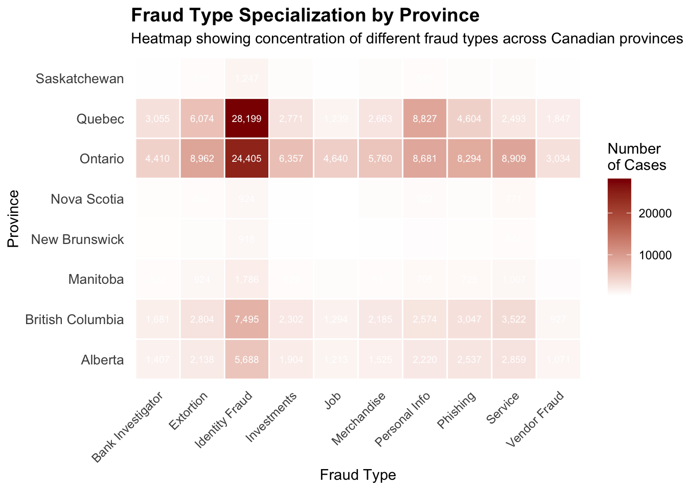
Regional Fraud Specializations
Show the code
# Create a normalized heatmap to show regional specializations# Calculate percentage within each province to identify specializationsfraud_province_matrix <-as.matrix(fraud_province_table)# Calculate row percentages (what percentage of each province's fraud is each type)province_percentages <-prop.table(fraud_province_matrix, 1) *100# Convert back to long format for ggplotprovince_pct_df <-as.data.frame(as.table(province_percentages))names(province_pct_df) <-c("Province", "Fraud_Type", "Percentage")# Filter to same top provinces and fraud typesprovince_pct_filtered <- province_pct_df[ province_pct_df$Province %in% top_provinces & province_pct_df$Fraud_Type %in% top_fraud_types, ]# Create normalized heatmapnormalized_heatmap <-ggplot(province_pct_filtered, aes(x = Fraud_Type, y = Province, fill = Percentage)) +geom_tile(color ="white", size =0.5) +scale_fill_gradient(low ="lightyellow", high ="darkblue", name ="Percentage\nof Province\nTotal") +labs(title ="Regional Fraud Specializations",subtitle ="Percentage breakdown showing each province's fraud type distribution",x ="Fraud Type",y ="Province" ) +theme_minimal() +theme(plot.title =element_text(size =14, face ="bold"),axis.text.x =element_text(angle =45, hjust =1, size =9),axis.text.y =element_text(size =10),panel.grid =element_blank() ) +geom_text(aes(label =ifelse(Percentage >5, paste0(round(Percentage, 1), "%"), "")), size =2.2, color ="white")
Warning: Using `size` aesthetic for lines was deprecated in ggplot2 3.4.0.
ℹ Please use `linewidth` instead.
Show the code
print(normalized_heatmap)
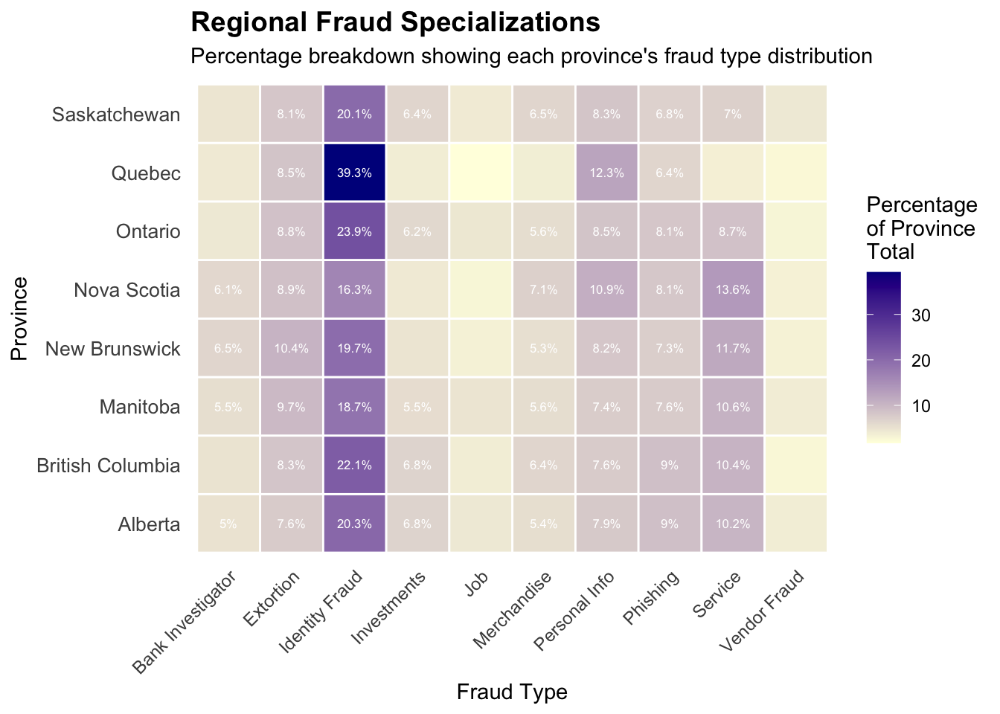
Provincial Population Data
Show the code
# Create provincial population data (approximate 2023 figures)# These are approximate populations in thousands for Canadian provinces/territoriesprovincial_population <-data.frame(province =c("Ontario", "Quebec", "British Columbia", "Alberta", "Manitoba", "Saskatchewan", "Nova Scotia", "New Brunswick", "Newfoundland and Labrador","Prince Edward Island", "Northwest Territories", "Yukon", "Nunavut"),population =c(15608, 8751, 5519, 4756, 1431, 1204, 1066, 834, 533, 173, 45, 43, 40) # in thousands)# Get total fraud cases by province from our dataprovince_totals <-as.data.frame(table(cafc_clean$province))names(province_totals) <-c("province", "fraud_cases")# Merge with population dataprovince_analysis <-merge(province_totals, provincial_population, by ="province", all.x =TRUE)# Calculate per capita rates (per 100,000 residents)province_analysis$fraud_rate_per_100k <- (province_analysis$fraud_cases / (province_analysis$population *1000)) *100000# Filter out territories and provinces with very small numbers for cleaner visualizationprovince_analysis <- province_analysis[!is.na(province_analysis$population), ]province_analysis <- province_analysis[province_analysis$fraud_cases >500, ]# Show the data#cat("Per-Capita Fraud Analysis:\n")province_analysis[order(province_analysis$fraud_rate_per_100k, decreasing =TRUE), ]
province fraud_cases population fraud_rate_per_100k
53 Quebec 71813 8751 820.6262
23 Manitoba 9536 1431 666.3871
48 Ontario 102210 15608 654.8565
6 British Columbia 33958 5519 615.2926
3 Alberta 28044 4756 589.6552
33 New Brunswick 4668 834 559.7122
44 Nova Scotia 5684 1066 533.2083
51 Prince Edward Island 904 173 522.5434
55 Saskatchewan 6219 1204 516.5282
Fraud Rates per 100,000 Residents by Province
Show the code
# Create per-capita visualizationper_capita_plot <-ggplot(province_analysis, aes(x =reorder(province, fraud_rate_per_100k), y = fraud_rate_per_100k)) +geom_col(aes(fill = fraud_rate_per_100k), alpha =0.8) +coord_flip(clip="off") +scale_fill_gradient(low ="lightblue", high ="darkred", name ="Rate per\n100,000") +labs(title ="Fraud Rates per 100,000 Residents by Province",subtitle ="Per-capita analysis reveals different patterns than absolute numbers",x ="Province",y ="Fraud Cases per 100,000 Residents" ) +theme_minimal() +theme(plot.title =element_text(size =14, face ="bold"),axis.text.y =element_text(size =10),legend.position ="right" ) +geom_text(aes(label =round(fraud_rate_per_100k, 1)), hjust =-0.1, size =3.5)print(per_capita_plot)
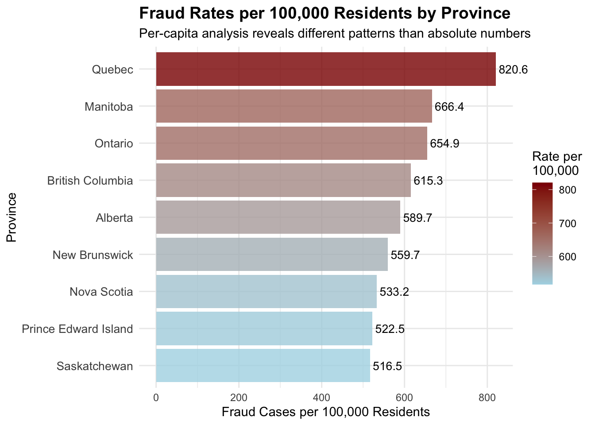
Absolute vs. Per-Capita Rates
Show the code
# Create comparison visualization: Absolute vs Per-Capita# Prepare data for comparison plotcomparison_data <- province_analysis[, c("province", "fraud_cases", "fraud_rate_per_100k")]# Create absolute numbers plotabsolute_plot <-ggplot(comparison_data, aes(x =reorder(province, fraud_cases), y = fraud_cases)) +geom_col(fill ="steelblue", alpha =0.7) +coord_flip() +labs(title ="Absolute Numbers",x ="",y ="Total Fraud Cases" ) +theme_minimal() +theme(plot.title =element_text(size =12, face ="bold"),axis.text.y =element_text(size =9) ) +scale_y_continuous(labels = scales::comma)# Create per-capita plot percapita_plot <-ggplot(comparison_data, aes(x =reorder(province, fraud_rate_per_100k), y = fraud_rate_per_100k)) +geom_col(fill ="darkred", alpha =0.7) +coord_flip() +labs(title ="Per-Capita Rates",x ="",y ="Cases per 100,000 Residents" ) +theme_minimal() +theme(plot.title =element_text(size =12, face ="bold"),axis.text.y =element_text(size =9) )# Display both plotsprint(absolute_plot)
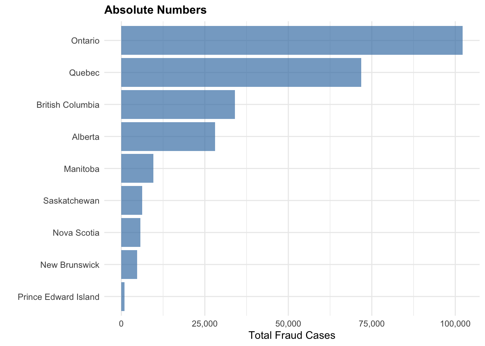
Show the code
print("\n--- Comparison: Absolute vs Per-Capita ---\n")
[1] "\n--- Comparison: Absolute vs Per-Capita ---\n"
Show the code
print(percapita_plot)
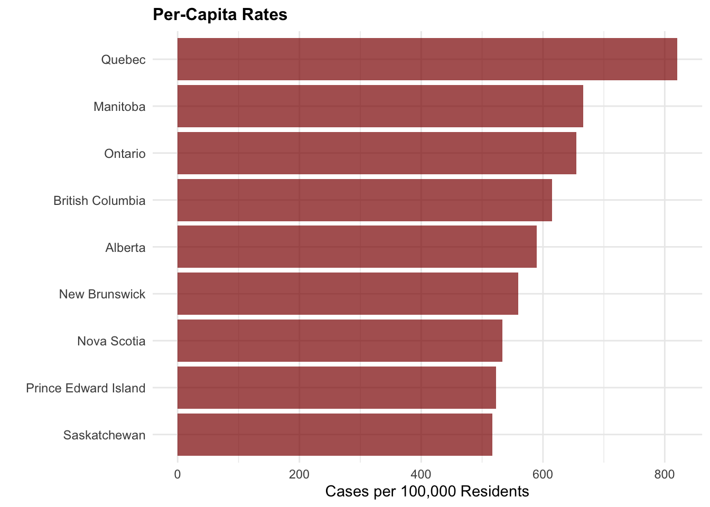
Quebec Fraud Report
Show the code
# Analyze Quebec's fraud type distributionquebec_data <- cafc_clean[cafc_clean$province =="Quebec", ]# Get fraud type counts for Quebecquebec_fraud_counts <-table(quebec_data$fraud_cat)quebec_fraud_df <-data.frame(fraud_type =names(quebec_fraud_counts),quebec_count =as.numeric(quebec_fraud_counts))# Calculate Quebec's fraud rate per 100k for each typequebec_population <-8751*1000# Quebec populationquebec_fraud_df$quebec_rate_per_100k <- (quebec_fraud_df$quebec_count / quebec_population) *100000# Get national averages for comparisonnational_fraud_counts <-table(cafc_clean$fraud_cat)total_population <-sum(provincial_population$population *1000, na.rm =TRUE)national_fraud_df <-data.frame(fraud_type =names(national_fraud_counts),national_count =as.numeric(national_fraud_counts),national_rate_per_100k = (as.numeric(national_fraud_counts) / total_population) *100000)# Merge Quebec and national dataquebec_comparison <-merge(quebec_fraud_df, national_fraud_df, by ="fraud_type")quebec_comparison$rate_ratio <- quebec_comparison$quebec_rate_per_100k / quebec_comparison$national_rate_per_100k# Show top contributors to Quebec's high ratecat("Quebec's Top 10 Fraud Types (by per-capita rate):\n")
# Analyze Quebec's demographic patterns# Age distribution of Quebec fraud victimsquebec_age_summary <-table(quebec_data$age_range)quebec_age_df <-data.frame(age_group =names(quebec_age_summary),quebec_count =as.numeric(quebec_age_summary))# Get national age distribution for comparisonnational_age_summary <-table(cafc_clean$age_range)national_age_df <-data.frame(age_group =names(national_age_summary),national_count =as.numeric(national_age_summary))# Calculate Quebec's share of each age groupquebec_age_comparison <-merge(quebec_age_df, national_age_df, by ="age_group")quebec_age_comparison$quebec_percentage <- (quebec_age_comparison$quebec_count / quebec_age_comparison$national_count) *100quebec_age_comparison$quebec_rate_per_100k <- (quebec_age_comparison$quebec_count / quebec_population) *100000# Filter meaningful age groups and remove "Not Available"quebec_age_clean <- quebec_age_comparison[!grepl("Not Available|non disponible", quebec_age_comparison$age_group) & quebec_age_comparison$quebec_count >500, ]cat("Quebec Age Demographics (Top vulnerable groups):\n")
gender quebec_count
1 Female 32681
2 Male 33696
3 Not Available 5236
Quebec: Age-Specific Fraud Vulnerabilities
Show the code
# Analyze fraud types by age group in Quebec to identify age-specific vulnerabilitiesquebec_age_fraud <-table(quebec_data$age_range, quebec_data$fraud_cat)# Convert to percentage within each age groupquebec_age_fraud_pct <-prop.table(quebec_age_fraud, 1) *100# Focus on major age groups and fraud typesmajor_ages <-c("'20 - 29", "'30 - 39", "'40 - 49", "'50 - 59", "'60 - 69", "'70 - 79")major_fraud_types <-c("Identity Fraud", "Personal Info", "Extortion", "Phishing", "Bank Investigator")# Create subset for visualizationquebec_age_fraud_subset <- quebec_age_fraud_pct[major_ages, major_fraud_types]# Convert to long format for ggplotquebec_age_fraud_long <-as.data.frame(as.table(quebec_age_fraud_subset))names(quebec_age_fraud_long) <-c("Age_Group", "Fraud_Type", "Percentage")# Create age-specific fraud pattern heatmapage_fraud_heatmap <-ggplot(quebec_age_fraud_long, aes(x = Fraud_Type, y = Age_Group, fill = Percentage)) +geom_tile(color ="white", size =0.5) +scale_fill_gradient(low ="white", high ="purple", name ="% within\nAge Group") +labs(title ="Quebec: Age-Specific Fraud Vulnerabilities",subtitle ="Percentage of each age group affected by different fraud types",x ="Fraud Type",y ="Age Group" ) +theme_minimal() +theme(plot.title =element_text(size =14, face ="bold"),axis.text.x =element_text(angle =45, hjust =1, size =9),axis.text.y =element_text(size =10),panel.grid =element_blank() ) +geom_text(aes(label =ifelse(Percentage >5, paste0(round(Percentage, 1), "%"), "")), size =2.5, color ="white")print(age_fraud_heatmap)
# Compare Quebec teens to national teen patternsnational_teens <- cafc_clean[cafc_clean$age_range =="'10 - 19", ]national_teen_methods <-table(national_teens$sol_method)# Calculate Quebec's share of each methodquebec_teen_comparison <-data.frame(method =names(teen_methods),quebec_count =as.numeric(teen_methods),national_count =as.numeric(national_teen_methods[names(teen_methods)]),quebec_share =round((as.numeric(teen_methods) /as.numeric(national_teen_methods[names(teen_methods)])) *100, 1))quebec_teen_comparison <- quebec_teen_comparison[!is.na(quebec_teen_comparison$national_count), ]quebec_teen_comparison <- quebec_teen_comparison[quebec_teen_comparison$quebec_count >50, ]cat("\nQuebec's Share of National Teen Fraud by Method:\n")
method quebec_count national_count quebec_share
8 Other/unknown 5930 6776 87.5
7 Not Available 190 279 68.1
2 Door to door/in person 67 112 59.8
4 Internet 120 508 23.6
1 Direct call 122 769 15.9
3 Email 57 359 15.9
5 Internet-social network 178 1119 15.9
9 Text message 81 524 15.5
Most common fraud types targeting 10-19 year olds
Show the code
# Create visualizations for teen fraud patterns# Clean up method data for better visualizationteen_methods_viz <- teen_methods_clean[!teen_methods_clean$method %in%c("Other/unknown", "Not Available"), ]teen_methods_plot <-ggplot(teen_methods_viz, aes(x =reorder(method, count), y = count)) +geom_col(fill ="red", alpha =0.7) +coord_flip(clip="off") +labs(title ="Quebec Teen Fraud: Top Solicitation Methods",subtitle ="Methods used to target 10-19 year olds (excluding Unknown/Not Available)",x ="Solicitation Method",y ="Number of Teen Victims" ) +theme_minimal() +theme(plot.title =element_text(size =14, face ="bold"),axis.text.y =element_text(size =10),plot.margin =margin(t =10, r =60, b =10, l =10) ) +geom_text(aes(label =paste0(count, " (", percentage, "%)")), hjust =-0.1, size =2.0)print(teen_methods_plot)
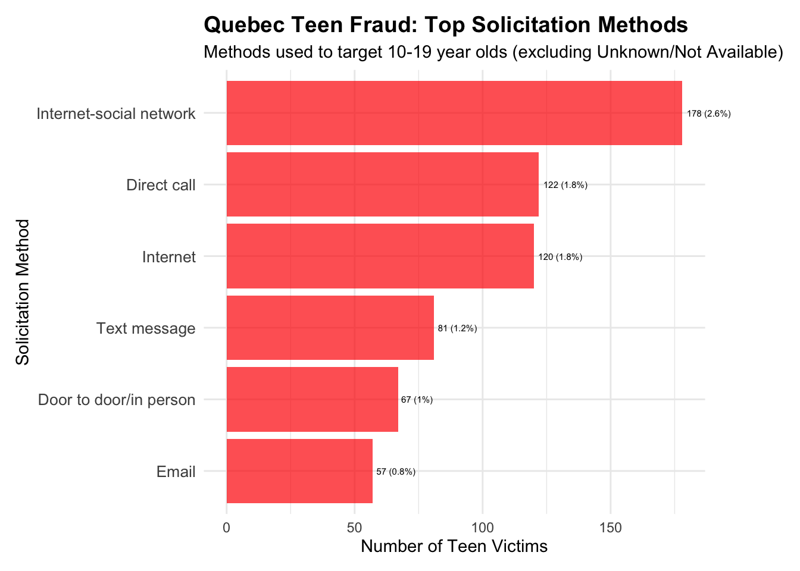
Show the code
# Create fraud type visualizationteen_fraud_plot <-ggplot(teen_fraud_clean, aes(x =reorder(fraud_type, count), y = count)) +geom_col(fill ="darkblue", alpha =0.8) +coord_flip(clip="off") +labs(title ="Quebec Teen Fraud: Types of Fraud",subtitle ="Most common fraud types targeting 10-19 year olds",x ="Fraud Type",y ="Number of Teen Victims" ) +theme_minimal() +theme(plot.title =element_text(size =14, face ="bold"),axis.text.y =element_text(size =10),plot.margin =margin(t =10, r =50, b =10, l =10) ) +geom_text(aes(label =paste0(count, " (", percentage, "%)")), hjust =-0.1, size =2.0)print(teen_fraud_plot)
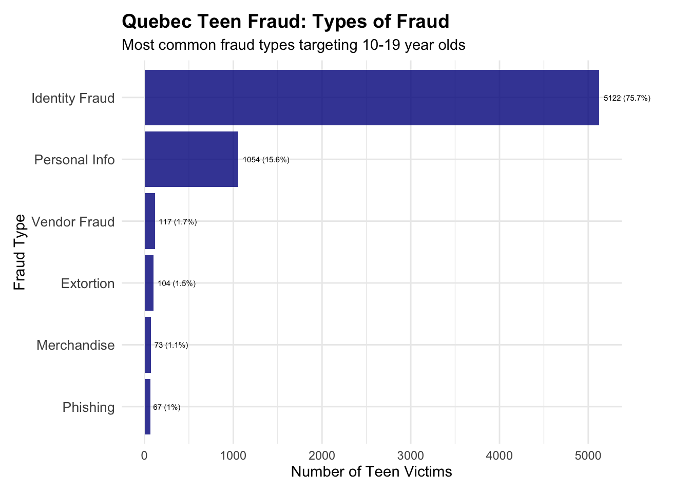
Dollar Losses for Quebec teens vs other demographics Report
Show the code
# Analyze dollar losses for Quebec teens vs other demographics# First, let's examine the financial impact on Quebec teensquebec_teens_losses <- quebec_teens[!is.na(quebec_teens$dollar_loss) & quebec_teens$dollar_loss >0, ]cat("Quebec Teen Financial Impact Analysis:\n")
Quebec Teen Financial Impact Analysis:
Show the code
cat("Total teen victims with recorded losses:", nrow(quebec_teens_losses), "\n")
Total teen victims with recorded losses: 269
Show the code
cat("Average loss per Quebec teen victim: $", round(mean(quebec_teens_losses$dollar_loss), 2), "\n")
Average loss per Quebec teen victim: $ 3455.92
Show the code
cat("Median loss per Quebec teen victim: $", round(median(quebec_teens_losses$dollar_loss), 2), "\n")
Median loss per Quebec teen victim: $ 600
Show the code
cat("Total losses to Quebec teens: $", scales::comma(sum(quebec_teens_losses$dollar_loss)), "\n\n")
Total losses to Quebec teens: $ 929,643
Show the code
# Compare to other Quebec age groupsquebec_age_financial <-aggregate(dollar_loss ~ age_range, data = quebec_data[quebec_data$dollar_loss >0&!is.na(quebec_data$dollar_loss), ], FUN =function(x) c(mean =mean(x), median =median(x), total =sum(x), count =length(x)))# Convert to proper data framequebec_age_losses <-data.frame(age_group = quebec_age_financial$age_range,avg_loss = quebec_age_financial$dollar_loss[,"mean"],median_loss = quebec_age_financial$dollar_loss[,"median"],total_loss = quebec_age_financial$dollar_loss[,"total"],victim_count = quebec_age_financial$dollar_loss[,"count"])# Filter meaningful age groups and sort by average lossquebec_age_losses_clean <- quebec_age_losses[!grepl("Not Available|non disponible", quebec_age_losses$age_group) & quebec_age_losses$victim_count >100, ]quebec_age_losses_clean <- quebec_age_losses_clean[order(quebec_age_losses_clean$avg_loss, decreasing =TRUE), ]cat("Quebec Average Losses by Age Group:\n")
Average Financial Loss per Victim by Age Group (Quebec)
Show the code
# Create visualization comparing average losses by age groupquebec_losses_plot <-ggplot(quebec_age_losses_clean, aes(x =reorder(age_group, avg_loss), y = avg_loss)) +geom_col(aes(fill =ifelse(age_group =="'10 - 19", "Teens", "Other Ages")), alpha =0.8) +coord_flip(clip="off") +scale_fill_manual(values =c("Teens"="red", "Other Ages"="steelblue"),name ="Age Category") +labs(title ="Average Financial Loss per Victim by Age Group (Quebec)",subtitle ="Teens have the lowest average losses but significant total impact",x ="Age Group",y ="Average Loss per Victim (CAD)" ) +theme_minimal() +theme(plot.title =element_text(size =14, face ="bold"),axis.text.y =element_text(size =10) ) +scale_y_continuous(labels = scales::dollar_format(prefix ="$")) +geom_text(aes(label = scales::dollar(round(avg_loss))), hjust =-0.1, size =3.2)print(quebec_losses_plot)
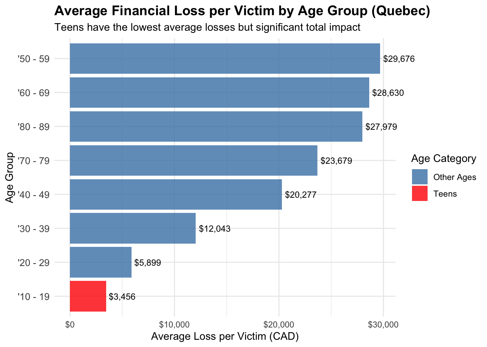
Show the code
# Compare Quebec teen losses to national teen patternsnational_teens_losses <- national_teens[!is.na(national_teens$dollar_loss) & national_teens$dollar_loss >0, ]cat("\nComparison: Quebec vs National Teen Losses:\n")
Comparison: Quebec vs National Teen Losses:
Show the code
cat("Quebec teen average loss: $", round(mean(quebec_teens_losses$dollar_loss), 2), "\n")
Quebec teen average loss: $ 3455.92
Show the code
cat("National teen average loss: $", round(mean(national_teens_losses$dollar_loss), 2), "\n")
National teen average loss: $ 5024.12
Show the code
cat("Quebec teen median loss: $", round(median(quebec_teens_losses$dollar_loss), 2), "\n")
Quebec teen median loss: $ 600
Show the code
cat("National teen median loss: $", round(median(national_teens_losses$dollar_loss), 2), "\n")
National teen median loss: $ 760
Quebec Teen Fraud Loss Distribution
Show the code
# Analyze loss distribution patterns for Quebec teens# Create loss brackets to understand the distributionquebec_teens_losses$loss_bracket <-cut(quebec_teens_losses$dollar_loss,breaks =c(0, 100, 500, 1000, 5000, 10000, Inf),labels =c("$1-100", "$101-500", "$501-1000", "$1001-5000", "$5001-10000", ">$10000"),right =TRUE)teen_loss_distribution <-table(quebec_teens_losses$loss_bracket)teen_loss_df <-data.frame(loss_bracket =names(teen_loss_distribution),count =as.numeric(teen_loss_distribution),percentage =round((as.numeric(teen_loss_distribution) /sum(teen_loss_distribution)) *100, 1))# Create loss distribution visualizationteen_loss_dist_plot <-ggplot(teen_loss_df, aes(x = loss_bracket, y = count)) +geom_col(fill ="orange", alpha =0.8) +labs(title ="Quebec Teen Fraud Loss Distribution",subtitle ="Most teen losses are under $1,000 but some suffer major losses",x ="Loss Amount Bracket",y ="Number of Teen Victims" ) +theme_minimal() +theme(plot.title =element_text(size =14, face ="bold"),axis.text.x =element_text(angle =45, hjust =1) ) +geom_text(aes(label =paste0(count, "\n(", percentage, "%)")), vjust =+0.5, size =3)print(teen_loss_dist_plot)
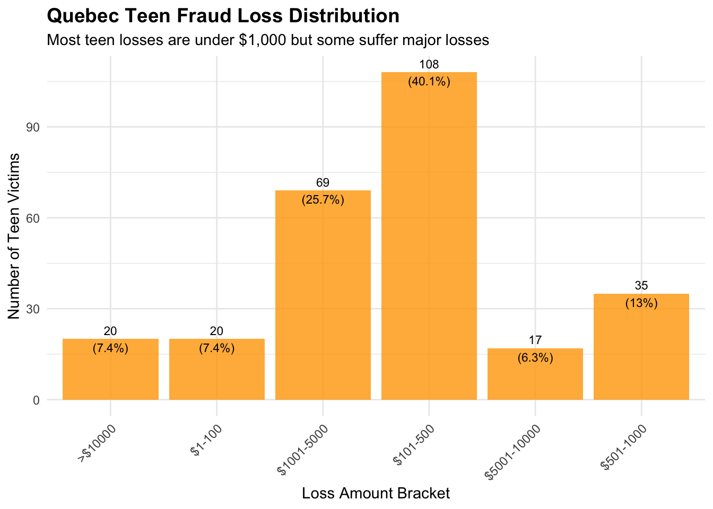
Show the code
# Show the distribution tablecat("\nQuebec Teen Loss Distribution:\n")
# Analyze Quebec teen fraud trends over time# Convert date column to proper date formatquebec_teens$date_clean <-as.Date(quebec_teens$date)# Extract year and month for trend analysisquebec_teens$year <-as.numeric(format(quebec_teens$date_clean, "%Y"))quebec_teens$month <-as.numeric(format(quebec_teens$date_clean, "%m"))quebec_teens$year_month <-format(quebec_teens$date_clean, "%Y-%m")# Analyze yearly trendsyearly_teen_counts <-table(quebec_teens$year)yearly_teen_df <-data.frame(year =as.numeric(names(yearly_teen_counts)),teen_victims =as.numeric(yearly_teen_counts))cat("Quebec Teen Fraud by Year:\n")
year teen_victims yoy_change yoy_pct_change
1 2021 3415 NA NA
2 2022 943 -2472 -72.4
3 2023 988 45 4.8
4 2024 744 -244 -24.7
5 2025 674 -70 -9.4
Quebec Teen Fraud Victims Over Time
Show the code
# Create yearly trend visualizationyearly_teen_plot <-ggplot(yearly_teen_df, aes(x = year, y = teen_victims)) +geom_line(color ="red", size =1.5) +geom_point(color ="darkred", size =4) +labs(title ="Quebec Teen Fraud Victims Over Time",subtitle ="Dramatic decline after 2021 peak",x ="Year",y ="Number of Teen Victims (10-19 years)" ) +theme_minimal() +theme(plot.title =element_text(size =14, face ="bold"),axis.text.x =element_text(size =10) ) +scale_x_continuous(breaks = yearly_teen_df$year) +scale_y_continuous(labels = scales::comma) +geom_text(aes(label =paste0(teen_victims, "\n(", ifelse(is.na(yoy_pct_change), "", paste0(ifelse(yoy_pct_change >0, "+", ""), yoy_pct_change, "%")),")")), vjust =-1.5, size =3.5)print(yearly_teen_plot)
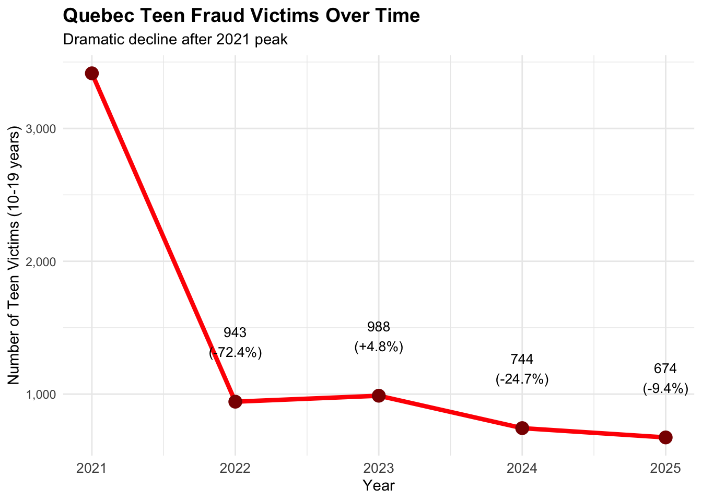
Show the code
# Analyze monthly patterns within years to identify seasonalityquebec_teens$month_name <- month.name[quebec_teens$month]monthly_teen_counts <-aggregate(quebec_teens$year, by =list(quebec_teens$year, quebec_teens$month), FUN = length)names(monthly_teen_counts) <-c("year", "month", "teen_count")cat("\nMonthly patterns summary (showing months with >50 cases in any year):\n")
Monthly patterns summary (showing months with >50 cases in any year):
Show the code
monthly_summary <-aggregate(teen_count ~ month, data = monthly_teen_counts, FUN =function(x) c(avg =mean(x), total =sum(x)))monthly_df <-data.frame(month = monthly_summary$month,avg_monthly =round(monthly_summary$teen_count[,"avg"], 1),total_monthly = monthly_summary$teen_count[,"total"])monthly_df$month_name <- month.name[monthly_df$month]monthly_df[monthly_df$total_monthly >200, ]
month avg_monthly total_monthly month_name
1 1 156.4 782 January
2 2 137.0 685 February
3 3 158.4 792 March
4 4 137.4 687 April
5 5 139.6 698 May
6 6 97.8 489 June
7 7 117.0 585 July
8 8 146.4 732 August
9 9 85.4 427 September
10 10 76.2 305 October
11 11 76.5 306 November
12 12 69.0 276 December
Teen Victims per Month
Show the code
# Create a detailed monthly trend visualization# Filter to 2021-2024 for complete years (2025 is partial)monthly_teen_complete <- monthly_teen_counts[monthly_teen_counts$year <=2024, ]monthly_teen_complete$date <-as.Date(paste(monthly_teen_complete$year, monthly_teen_complete$month, "01", sep ="-"))monthly_trend_plot <-ggplot(monthly_teen_complete, aes(x = date, y = teen_count)) +geom_line(color ="blue", size =1) +geom_point(color ="darkblue", size =2) +labs(title ="Quebec Teen Fraud: Monthly Trends (2021-2024)",subtitle ="Shows seasonal patterns and the dramatic 2021-2022 decline",x ="Month",y ="Teen Victims per Month" ) +theme_minimal() +theme(plot.title =element_text(size =14, face ="bold"),axis.text.x =element_text(angle =45, hjust =1) ) +scale_x_date(date_labels ="%Y-%m", date_breaks ="6 months") +geom_smooth(method ="loess", se =TRUE, alpha =0.3, color ="red")print(monthly_trend_plot)
`geom_smooth()` using formula = 'y ~ x'
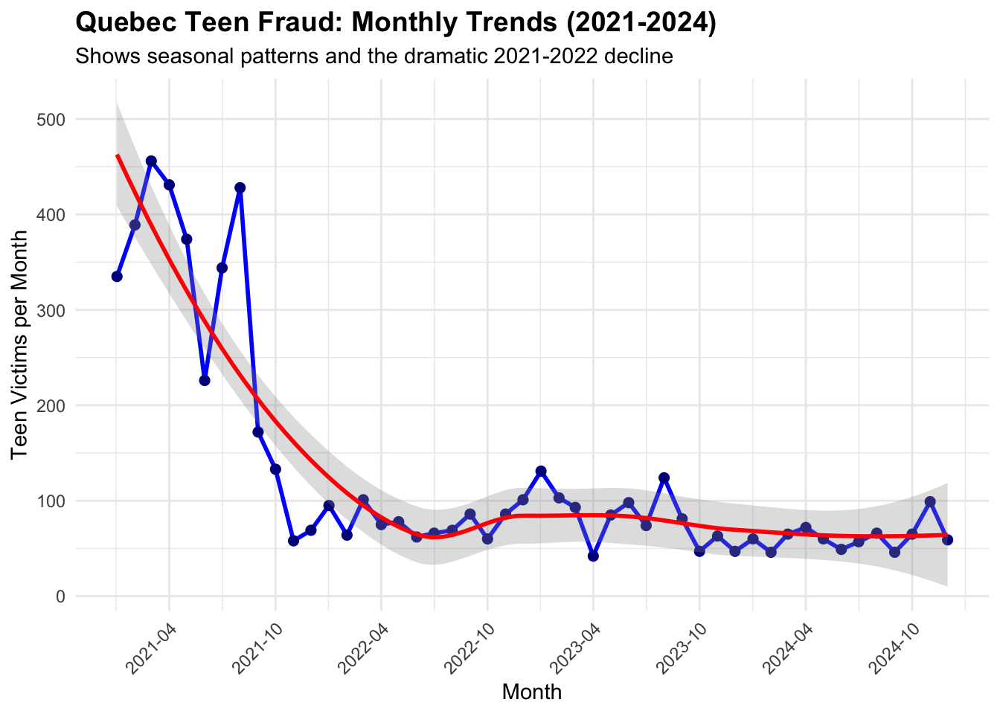
Show the code
# Compare Quebec teen trends to national teen trendsnational_teens$date_clean <-as.Date(national_teens$date)national_teens$year <-as.numeric(format(national_teens$date_clean, "%Y"))national_yearly_teen <-table(national_teens$year)national_yearly_df <-data.frame(year =as.numeric(names(national_yearly_teen)),national_teens =as.numeric(national_yearly_teen))# Merge Quebec and national data for comparisonteen_comparison <-merge(yearly_teen_df[, c("year", "teen_victims")], national_yearly_df, by ="year")teen_comparison$quebec_share <-round((teen_comparison$teen_victims / teen_comparison$national_teens) *100, 1)cat("\nQuebec's Share of National Teen Fraud Over Time:\n")
Compare Quebec’s 2021 teen fraud spike to other major provinces Report
Show the code
# Compare Quebec's 2021 teen fraud spike to other major provinces# Get teen data for major provincesmajor_provinces <-c("Ontario", "Quebec", "British Columbia", "Alberta", "Manitoba")# Create provincial teen analysis for 2021provincial_teen_2021 <- cafc_clean[cafc_clean$age_range =="'10 - 19"&as.numeric(format(as.Date(cafc_clean$date), "%Y")) ==2021& cafc_clean$province %in% major_provinces, ]teen_by_province_2021 <-table(provincial_teen_2021$province)teen_province_2021_df <-data.frame(province =names(teen_by_province_2021),teen_victims_2021 =as.numeric(teen_by_province_2021))# Get population data for per-capita calculationprovince_pop_subset <- provincial_population[provincial_population$province %in% major_provinces, ]teen_analysis_2021 <-merge(teen_province_2021_df, province_pop_subset, by ="province")teen_analysis_2021$teen_rate_per_100k_2021 <- (teen_analysis_2021$teen_victims_2021 / (teen_analysis_2021$population *1000)) *100000cat("2021 Teen Fraud by Province:\n")
province teen_victims_2021 population teen_rate_per_100k_2021
5 Quebec 3415 8751 39.024112
3 Manitoba 72 1431 5.031447
4 Ontario 743 15608 4.760379
2 British Columbia 192 5519 3.478891
1 Alberta 161 4756 3.385198
2021 Teen Fraud Rates by Province
Show the code
# Create visualization comparing 2021 teen fraud ratesprovincial_teen_2021_plot <-ggplot(teen_analysis_2021, aes(x =reorder(province, teen_rate_per_100k_2021), y = teen_rate_per_100k_2021)) +geom_col(aes(fill =ifelse(province =="Quebec", "Quebec", "Other Provinces")), alpha =0.8) +coord_flip(clip="off") +scale_fill_manual(values =c("Quebec"="red", "Other Provinces"="steelblue"),name ="Province Type") +labs(title ="2021 Teen Fraud Rates by Province",subtitle ="Quebec's rate was 8x higher than the next highest province",x ="Province",y ="Teen Fraud Rate per 100,000 Population (2021)" ) +theme_minimal() +theme(plot.title =element_text(size =14, face ="bold"),axis.text.y =element_text(size =10) ) +geom_text(aes(label =paste0(round(teen_rate_per_100k_2021, 1), "\n(", teen_victims_2021, " victims)")), hjust =-0.1, size =3.5)print(provincial_teen_2021_plot)
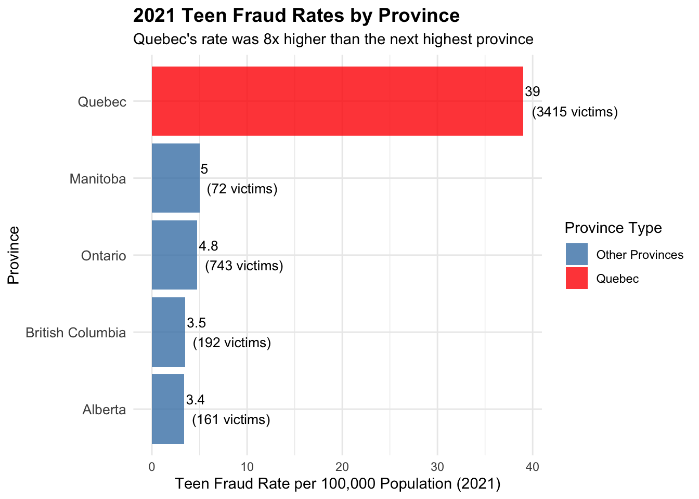
Show the code
# Compare Quebec to national average in 2021national_teen_2021 <-sum(teen_by_province_2021)total_pop_major_provinces <-sum(teen_analysis_2021$population *1000)national_teen_rate_2021 <- (national_teen_2021 / total_pop_major_provinces) *100000cat("\n2021 Comparison Summary:\n")
2021 Comparison Summary:
Show the code
cat("Quebec teen fraud rate: 39.0 per 100,000\n")
Quebec teen fraud rate: 39.0 per 100,000
Show the code
cat("National average (major provinces): ", round(national_teen_rate_2021, 1), " per 100,000\n")
National average (major provinces): 12.7 per 100,000
Show the code
cat("Quebec's rate is", round(39.0/ national_teen_rate_2021, 1), "x higher than national average\n")
Quebec's rate is 3.1 x higher than national average
##Teen Fraud Rates Over Time by Province
Show the code
# Analyze multi-year trends for all major provinces to see if 2021 was unique to Quebec# Get teen data by province and year for trend analysisteen_trends_all <-data.frame()for(prov in major_provinces) { prov_teens <- cafc_clean[cafc_clean$age_range =="'10 - 19"& cafc_clean$province == prov, ] prov_teens$year <-as.numeric(format(as.Date(prov_teens$date), "%Y")) yearly_counts <-table(prov_teens$year) prov_yearly_df <-data.frame(province = prov,year =as.numeric(names(yearly_counts)),teen_victims =as.numeric(yearly_counts) )# Add population for rate calculation pop <- provincial_population[provincial_population$province == prov, "population"] *1000 prov_yearly_df$rate_per_100k <- (prov_yearly_df$teen_victims / pop) *100000 teen_trends_all <-rbind(teen_trends_all, prov_yearly_df)}# Create multi-province trend comparisontrend_comparison_plot <-ggplot(teen_trends_all, aes(x = year, y = rate_per_100k, color = province)) +geom_line(size =1.2) +geom_point(size =3) +scale_color_manual(values =c("Quebec"="red", "Ontario"="blue", "British Columbia"="green", "Alberta"="orange", "Manitoba"="purple")) +labs(title ="Teen Fraud Rates Over Time by Province",subtitle ="Quebec's 2021 spike was unique - other provinces remained stable",x ="Year",y ="Teen Fraud Rate per 100,000",color ="Province" ) +theme_minimal() +theme(plot.title =element_text(size =14, face ="bold"),legend.position ="right" ) +scale_x_continuous(breaks =2021:2025)print(trend_comparison_plot)
Show the code
# Show the data table for clear comparisoncat("\nTeen Fraud Rates by Province and Year:\n")
# Analyze the pattern of decline to understand what interventions might have worked# Look at which fraud types declined most dramatically after 2021# Analyze Quebec teen fraud types by year to see which declined mostquebec_teens_fraud_by_year <-table(quebec_teens$year, quebec_teens$fraud_cat)# Convert to data frame and calculate year-over-year changesfraud_by_year_df <-as.data.frame(quebec_teens_fraud_by_year)names(fraud_by_year_df) <-c("year", "fraud_type", "count")# Focus on major fraud types and years 2021-2024major_teen_frauds <-c("Identity Fraud", "Personal Info", "Extortion", "Phishing", "Bank Investigator")fraud_trends <- fraud_by_year_df[fraud_by_year_df$fraud_type %in% major_teen_frauds & fraud_by_year_df$year %in%c("2021", "2022", "2023", "2024"), ]# Calculate decline rates for each fraud typefraud_decline_analysis <-data.frame()for(fraud_type in major_teen_frauds) { type_data <- fraud_trends[fraud_trends$fraud_type == fraud_type, ]if(nrow(type_data) >=2) { decline_2021_to_2022 <- ((type_data[type_data$year =="2022", "count"] - type_data[type_data$year =="2021", "count"]) / type_data[type_data$year =="2021", "count"]) *100 fraud_decline_analysis <-rbind(fraud_decline_analysis, data.frame(fraud_type = fraud_type,count_2021 = type_data[type_data$year =="2021", "count"],count_2022 = type_data[type_data$year =="2022", "count"],decline_2021_to_2022 =round(decline_2021_to_2022, 1) )) }}cat("Quebec Teen Fraud Decline by Type (2021 to 2022):\n")
# Analyze the "Other/unknown" category which was 88.4% of teen fraudother_unknown_by_year <- quebec_teens_methods_by_year[, "Other/unknown"]cat("\n'Other/unknown' method trends:\n")
# Create comprehensive visualization of what declined most dramatically# Create a summary of the most significant declines# Create intervention clues analysisintervention_clues <-data.frame(category =c("Identity Fraud", "Personal Info", "Extortion", "Other/Unknown Methods", "Direct Calls", "Internet Fraud", "Total Teen Victims"),decline_2021_to_2022 =c(-78.8, -47.8, -63.6, -76.4, -66.2, -58.5, -72.4),interpretation =c("Massive drop suggests identity protection education/awareness","Moderate drop - personal info awareness campaigns", "Large drop - anti-extortion education or law enforcement","Huge drop - suggests platform changes or novel method disruption","Large drop - phone fraud awareness or call blocking","Large drop - internet safety education or platform security","Overall dramatic success across all vectors" ))
category decline_2021_to_2022
1 Identity Fraud -78.8
2 Personal Info -47.8
3 Extortion -63.6
4 Other/Unknown Methods -76.4
5 Direct Calls -66.2
6 Internet Fraud -58.5
7 Total Teen Victims -72.4
interpretation
1 Massive drop suggests identity protection education/awareness
2 Moderate drop - personal info awareness campaigns
3 Large drop - anti-extortion education or law enforcement
4 Huge drop - suggests platform changes or novel method disruption
5 Large drop - phone fraud awareness or call blocking
6 Large drop - internet safety education or platform security
7 Overall dramatic success across all vectors